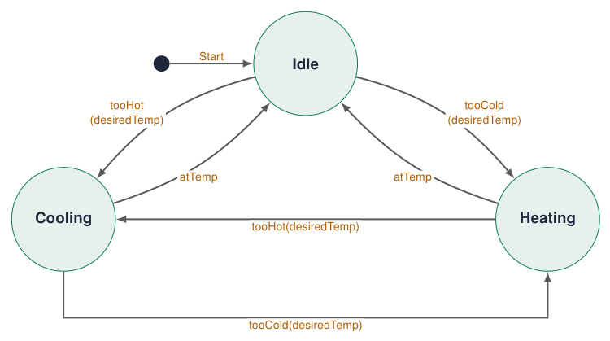
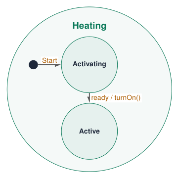
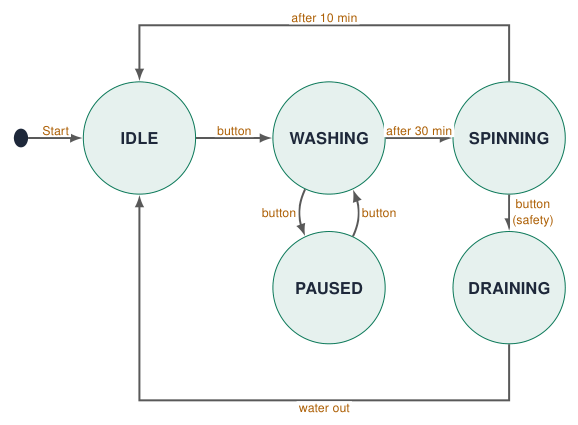
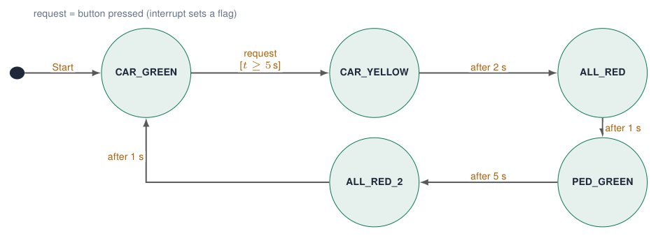
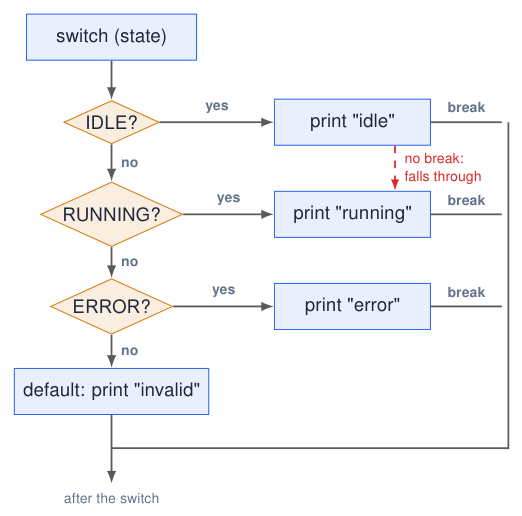
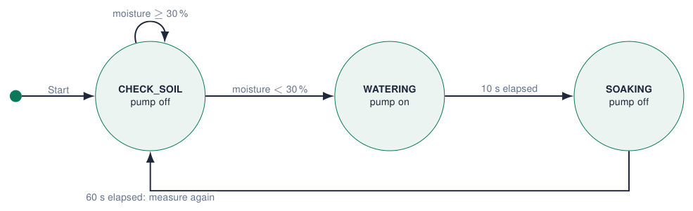
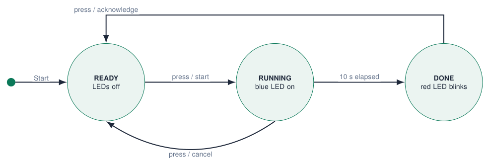

State Machines¶
Why state machines?¶
Try simulation: State machines
Try simulation: Coffee machine, step by step
-
Real systems have modes: a washing machine is idle, washing, paused, spinning …
-
In each mode the same input means something different: the start button starts, pauses or resumes.
-
A state machine explicitly models the mutually exclusive modes of a system and the events that cause transitions between them.
Benefits
-
easier to read
-
easier to debug (print the state!)
-
easier to expand (add a state)
-
more reliable: impossible combinations cannot happen
Without
Complex programs become a long list of ifs and flags that nobody understands any more.
Sources: Embedded Programming, lectures 1–6
Flags gone wrong¶
bool carGreen;
bool carRed;
bool pedestrianGreen;
bool pedestrianRed;
4 booleans \(\Rightarrow\) \(2^4 = 16\) combinations. Only a few are valid. What does this mean?
carGreen = true;
carRed = true; // both?!
pedestrianGreen = true; // danger!
pedestrianRed = false;
-
Nothing in the code prevents an impossible or dangerous combination.
-
Every new feature adds flags and
ifs that must be kept consistent by hand.
Better: one variable for the state
enum State { NORMAL, ORANGE, PED_GREEN, ALL_RED };
State state = NORMAL;
The system is always in exactly one state.
Sources: Example from lecture 6 Embedded Programming, lectures 1–6
State diagrams: the design¶
Try simulation: Coffee machine, step by step

Sources: Redrawn with circular states from the temperature-control example Mastering State Diagrams in UML: A Comprehensive Guide, via lecture 5
Read a state diagram: states, events and guards¶
-
States: circles, named after what the system is or does.
-
Transitions: arrows labelled with the event (and optional condition / action):
event [guard] / action -
Start: black dot and an arrow to the initial state. It marks where execution begins; it is not a normal event.
-
Specific behaviour per state: what is on, what is checked.
The hardest part
Converting the user story into states. Underline the verbs (“waits”, “heats”, “alarms”) and the events (“button”, “after 5 s”, “too hot”).
Sources: Notation from the temperature-control example Mastering State Diagrams in UML: A Comprehensive Guide, via lecture 5
Diagram notation: actions, nested states and finishing¶

-
tooCold(desiredTemp): event with a parameter. -
ready / turnOn(): the event triggers an action on the transition. -
Heating can contain nested states. Its own Start arrow selects Activating when Heating is entered.
An optional final state
A dot inside a circle marks the end of a process. Controllers that keep running may have no final state.
Sources: Notation from the original temperature-control diagram Mastering State Diagrams in UML: A Comprehensive Guide, via lecture 5; redrawn
Example: a washing machine¶
Try simulation: State machines

| State + event | \(\rightarrow\) new state |
|---|---|
| IDLE + button | WASHING |
| WASHING + button | PAUSED |
| PAUSED + button | WASHING |
| SPINNING + button | DRAINING |
| DRAINING + button | (ignore) |
current state + event \(\rightarrow\) transition / action: the same button has 4 meanings.
Sources: Example from lecture 6 Embedded Programming, lectures 1–6
A different event: the washing-machine stop request¶
The previous example uses a start/pause button. The original lecture also asks what a stop request should do in different states:
| Current state | Event | Action / next state |
|---|---|---|
| IDLE | stop request | do nothing; remain IDLE |
| WASHING | stop request | pause; go to PAUSED |
| SPINNING | stop request | stop spinning; go to DRAINING |
State + event determines the response
Decide which events the system has before writing the switch cases. A start request in IDLE and a stop request in IDLE need different actions.
Sources: Lecture 6, slide 6 Embedded Programming, lectures 1–6
Example: a pedestrian crossing¶
Try simulation: Traffic lights
Try simulation: Intersection controller

Read it
Cars stay green until a pedestrian presses the button and the green phase lasted at least 5 s (guard).
Safety by design
Pedestrians are green only in PED_GREEN (cars red). In CAR_GREEN/YELLOW they stay red. Both ALL_RED states keep everyone red, preventing conflicting greens.
Sources: Car vs pedestrian example, lecture 5 Embedded Programming, lectures 1–6
enum: names for numbers¶
// magic numbers: what is state 2?
int state = 0;
if (state == 2) { /* ... */ }
// enum: a type with named values
enum State {
IDLE, // 0
RUNNING, // 1
ERROR // 2
};
State currentState = IDLE;
if (currentState == ERROR) { /* ... */ }
Serial.println(currentState); // prints 0
-
An enumeration is a data type that gives names to integer values.
-
The compiler numbers them 0, 1, 2, … automatically.
-
if (state == ERROR)explains itself;if (state == 2)does not. -
Adding a state = adding a name to the list.
Printing names
Serial prints the number. For readable logs write a small function const char* stateName(State s) with a switch.
Sources: Examples from lecture 6 Embedded Programming, lectures 1–6
switch / case¶
Try simulation: State machines
switch (currentState) {
case IDLE:
Serial.println("System idle");
break;
case RUNNING:
Serial.println("System running");
break;
case ERROR:
Serial.println("System error");
break;
default:
Serial.println("INVALID STATE");
break;
}
-
Runs the block that matches the value of one variable.
-
switch: “handle every possible value of this variable”.
if: “check whether this particular condition is true”. -
breakends the case. Without it, execution falls through into the next case! -
default: all other values.
Only integers and enums
switch works with int, char and enum, not with String or float.
Sources: Examples from lecture 6 Embedded Programming, lectures 1–6
Flowchart: switch / case¶
Try simulation: State machines
Try simulation: Arduino to flowchart

-
A
switchis a chain of comparisons with one variable:state == IDLE?,== RUNNING?… -
breakjumps to after the switch. -
Forgotten
break: the next case runs too (red dashed arrow). -
default: when no case matched.
default: expect the unexpected¶
enum State { NORMAL, ORANGE, PED_GREEN, ALL_RED };
State state = NORMAL;
void loop() {
switch (state) {
case NORMAL: /* ... */ break;
case ORANGE: /* ... */ break;
case PED_GREEN: /* ... */ break;
case ALL_RED: /* ... */ break;
default:
Serial.println("INVALID STATE");
state = ALL_RED; // go to a safe state
break;
}
}
-
Memory corruption, a bug or a cast like
state = (State) 99;can create an impossible value. -
defaulthandles the unexpected value: log it and go to a safe state. -
Safety-critical systems always define what happens when “this cannot happen” happens.
Sources: Example from lecture 6 Embedded Programming, lectures 1–6
Implementing the washing machine: events¶
enum State { IDLE, WASHING, PAUSED, SPINNING, DRAINING };
State state = IDLE;
const int KEY1 = 34;
bool lastKey = LOW;
void onButton() { // event: one button press
switch (state) {
case IDLE: state = WASHING; break;
case WASHING: state = PAUSED; break;
case PAUSED: state = WASHING; break;
case SPINNING: state = DRAINING; break; // safety stop
default: break; // DRAINING: ignore
}
Serial.printf("new state: %d\n", state);
}
void setup() { Serial.begin(115200); pinMode(KEY1, INPUT); }
void loop() {
bool key = digitalRead(KEY1);
if (key == HIGH && lastKey == LOW) onButton(); // rising edge
lastKey = key;
delay(20); // simple debounce
}
-
The
switchis the transition table of the diagram, written in C++. -
The event (button press) is detected in one place (edge detection) and handled in one function.
-
Timed transitions (after 30 min) come next.
Print every transition
The Serial log shows exactly what the machine did: debugging becomes reading.
Implementing the crossing: states with time (1/2)¶
enum State { CAR_GREEN, CAR_YELLOW, ALL_RED, PED_GREEN, ALL_RED_2 };
// lights per state: car red, orange, green, ped green
const bool LIGHTS[5][4] = { {0, 0, 1, 0}, // CAR_GREEN
{0, 1, 0, 0}, // CAR_YELLOW
{1, 0, 0, 0}, // ALL_RED
{1, 0, 0, 1}, // PED_GREEN
{1, 0, 0, 0} }; // ALL_RED_2
const int PINS[4] = {21, 4, 22, 23}; // red, orange, green, blue
const int KEY1 = 34;
State state = CAR_GREEN;
unsigned long stateStart = 0; // when we entered the state
volatile bool requested = false; // set by the ISR
void IRAM_ATTR onKey1() { requested = true; }
void enterState(State s) { // the ONLY place where
state = s; // the state changes
stateStart = millis();
for (int i = 0; i < 4; i++) digitalWrite(PINS[i], LIGHTS[s][i]);
Serial.printf("-> state %d\n", s);
}
-
LIGHTS: a 2-D array, one row per state. The outputs of every state are data, easy to check against the diagram. -
stateStartremembers when the state began: timed transitions comparemillis() - stateStart. -
enterState(): one place where the state changes, so lights, timing and logging are never forgotten. -
The button only sets a flag in the ISR. Blue LED = pedestrian green.
Implementing the crossing: states with time (2/2)¶
Try simulation: Intersection controller
void setup() {
Serial.begin(115200);
for (int i = 0; i < 4; i++) pinMode(PINS[i], OUTPUT);
pinMode(KEY1, INPUT);
attachInterrupt(digitalPinToInterrupt(KEY1), onKey1, RISING);
enterState(CAR_GREEN);
}
void loop() {
unsigned long t = millis() - stateStart; // time in state
switch (state) {
case CAR_GREEN:
if (requested && t >= 5000) enterState(CAR_YELLOW);
break;
case CAR_YELLOW: if (t >= 2000) enterState(ALL_RED); break;
case ALL_RED: if (t >= 1000) enterState(PED_GREEN); break;
case PED_GREEN:
if (t >= 5000) { requested = false; enterState(ALL_RED_2); }
break;
case ALL_RED_2: if (t >= 1000) enterState(CAR_GREEN); break;
}
}
-
Each
case= one state of the diagram: only its transitions (the lights were set on entry). -
No
delay(): the loop runs freely, so the button and anything else stay responsive. -
Compare the code line by line with the diagram: they must match.
Race condition avoided
The ISR only sets requested; all state changes happen in loop() via enterState().
Worked example: watering a plant, state diagram¶
A non-blocking version of the plant-pot story: water below 30 %, then allow time for absorption.

Run it on the course board
A potentiometer on AD1 simulates 0–100 % moisture; the blue LED represents the pump. A real pump needs a suitable driver, and a real moisture sensor needs calibration.
Sources: Worked extension of the plant-pot story Embedded Programming, lectures 1–6
Plant controller: states, entry action and setup¶
// Course-board demo: a potentiometer on AD1 simulates soil moisture.
// The blue LED represents the pump; no pump is connected to a GPIO.
enum WaterState { CHECK_SOIL, WATERING, SOAKING };
WaterState state = CHECK_SOIL;
const int SENSOR = 36, PUMP_LED = 23;
unsigned long enteredAt = 0;
void enterState(WaterState next, unsigned long now) {
state = next;
enteredAt = now;
Serial.printf("state=%d\n", (int)state);
}
void setup() {
Serial.begin(115200);
pinMode(PUMP_LED, OUTPUT);
digitalWrite(PUMP_LED, LOW);
analogReadResolution(12);
}
-
Diagram circles become enum values.
-
enterState()stores both the state and its entry time. -
Every transition goes through this function.
-
Serial reports each transition once.
-
Startup leaves the simulated pump off.
Plant controller: translate each arrow into a condition¶
void loop() {
unsigned long now = millis();
switch (state) {
case CHECK_SOIL: {
int moisture = map(analogRead(SENSOR), 0, 4095, 0, 100);
if (moisture < 30) enterState(WATERING, now);
break;
}
case WATERING:
if (now - enteredAt >= 10000UL)
enterState(SOAKING, now);
break;
case SOAKING:
if (now - enteredAt >= 60000UL)
enterState(CHECK_SOIL, now);
break;
default:
enterState(CHECK_SOIL, now);
break;
}
digitalWrite(PUMP_LED, state == WATERING ? HIGH : LOW);
}
-
CHECK_SOIL: decide whether watering is needed. -
WATERING: leave after 10 s. -
SOAKING: leave after 60 s. -
Outputs follow the resulting state on every iteration.
-
No waiting loop and no
delay().
Check the diagram
Try 50 %, then 20 %. Restore 50 % while watering: does it still finish the 10 s phase and then wait 60 s?
Worked example: kitchen timer, state diagram¶
KEY1 starts a 10-second countdown, cancels it while running, and acknowledges the alarm.

Define priority and event behaviour
A debounced press is a one-time event. Holding KEY1 does not restart the timer. If cancel and timeout coincide in RUNNING, this example gives cancel priority.
Kitchen timer: create one debounced press event¶
// Course board: KEY1 starts/cancels/acknowledges a fixed 10-second timer.
enum TimerState { READY, RUNNING, DONE };
TimerState state = READY;
const int BUTTON = 34, BLUE_LED = 23, RED_LED = 21;
const unsigned long DURATION = 10000UL;
unsigned long enteredAt = 0;
bool pressEvent(unsigned long now) {
static bool lastRaw = false, stable = false;
static unsigned long changedAt = 0;
bool raw = digitalRead(BUTTON) == HIGH;
if (raw != lastRaw) {
lastRaw = raw;
changedAt = now;
}
if (now - changedAt < 30UL || raw == stable) return false;
stable = raw;
return stable; // true only on a debounced LOW-to-HIGH edge
}
-
KEY1 uses the course-board external pull-down: pressed is HIGH.
-
Record when the raw reading changes.
-
Accept the new value after it stays stable for 30 ms.
-
Return true only when the accepted value changes to HIGH.
-
The same event has a different action in each state.
Kitchen timer: initialise the hardware and state timer¶
void enterState(TimerState next, unsigned long now) {
state = next;
enteredAt = now;
Serial.printf("state=%d\n", (int)state);
}
void setup() {
Serial.begin(115200);
pinMode(BUTTON, INPUT); // course-board external pull-down
pinMode(BLUE_LED, OUTPUT);
pinMode(RED_LED, OUTPUT);
digitalWrite(BLUE_LED, LOW);
digitalWrite(RED_LED, LOW);
}
-
Use one function for every state entry.
-
Reset elapsed time on each transition.
-
Configure GPIO34 as
INPUT. -
Configure both LEDs as outputs and start with them off.
-
The next section contains the complete repeated state update.
Kitchen timer: transition logic and outputs¶
void loop() {
unsigned long now = millis();
bool pressed = pressEvent(now);
switch (state) {
case READY:
if (pressed) enterState(RUNNING, now);
break;
case RUNNING:
if (pressed) enterState(READY, now); // cancel has priority
else if (now - enteredAt >= DURATION) enterState(DONE, now);
break;
case DONE:
if (pressed) enterState(READY, now);
break;
default:
enterState(READY, now);
break;
}
digitalWrite(BLUE_LED, state == RUNNING ? HIGH : LOW);
bool flash = ((now - enteredAt) / 250UL) % 2 == 0;
digitalWrite(RED_LED, state == DONE && flash ? HIGH : LOW);
}
-
Read time and the button once per iteration.
-
Compare every transition with the diagram.
-
Use elapsed time for the alarm’s blink phase too.
Test it
Start, hold the button, cancel, restart, wait for DONE, then acknowledge. Predict each LED before running the sketch.
Quiz: state machines¶
-
What is the difference between a state and an event?
Check your answer
A state lasts (the system is in it); an event happens at a moment and can cause a transition.
-
What happens if you forget
breakaftercase IDLE:?Check your answer
Execution falls through into the next case: IDLE also runs the code of RUNNING.
-
Why store
stateStartwhen entering a state?Check your answer
To implement timed transitions without
delay():millis() - stateStart. -
The crossing must also accept a request during PED_GREEN without extending it. Where do you change the code?
Check your answer
Only reset
requestedwhen leaving PED_GREEN (already the case) and keep the 5 s guard in CAR_GREEN. -
Which state should
defaultswitch to in a traffic light?Check your answer
A safe state: all red (or blinking orange).
Exercises: state machines¶
Try simulation: Coffee machine experiment
Exercise 1 – Washing machine, complete
Add the timed transitions (use seconds instead of minutes) and show each state with an LED pattern. Draw the diagram first.
Exercise 2 – Crossing, extended
Add PED_BLINK (pedestrian green blinks for 3 s before ALL_RED_2) and a night mode on KEY2 (orange blinking).
Exercise 3 – Coffee machine
Design the state diagram of a coffee machine (idle, choose, heat, brew, ready, error: no water). Compare with the dashboard simulation, then implement it.
Exercise 4 – The plant pot, revisited
Rewrite the plant pot as a state machine: MEASURE, WATERING, SOAKING (wait 5 min), REPORT, without delay().